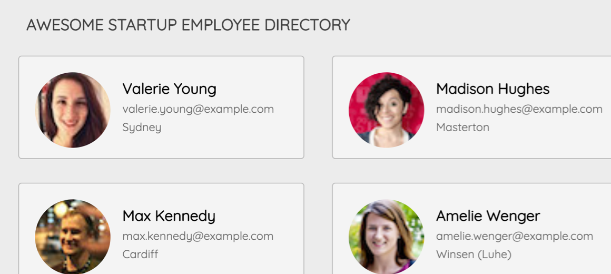

Projects

Directory with API
The directory project is where we had to use vanilla javascript and ajax to pull in photos from an external API call. We also created a model which opens to more detail of the profiles and you can click through using the arrows on the keyboard.
Technologies: Javascript, Ajax, HTML, CSS